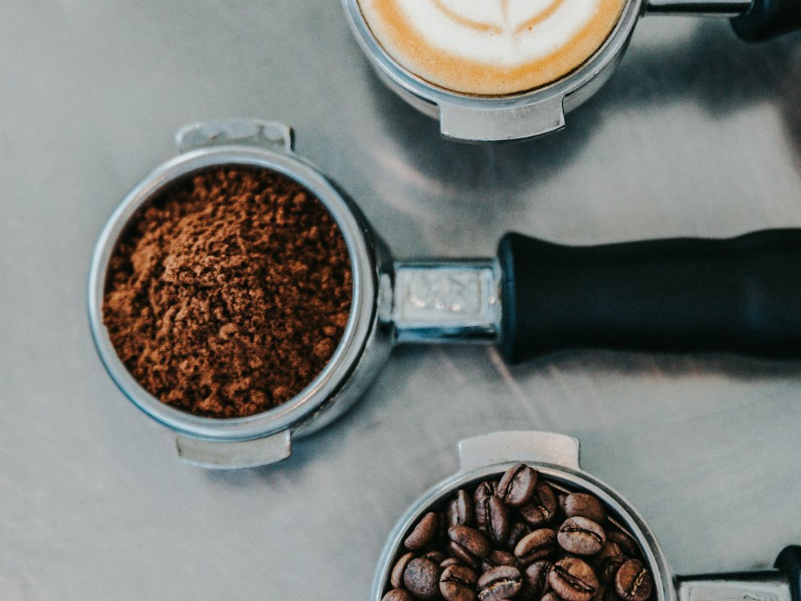

Starbucks
Кофейня · Кофе · Алматы
Рейтинг 2ГИС
★ 4.7
2 171 оценок
Год открытия
2015
в Казахстане с 2015 г.
Средний чек
2 500 ₸
по данным 2ГИС
Адрес и часы
📍 БЦ Esentai Tower, пр. Аль-Фараби, 77/7, Алматы · Бостандыкский район
🕒 пн-вс 08:00-24:00
Удобства
О заведении
Круглосуточная кофейня в Esentai Tower.
Меню
Рядом в справочнике
SMALL · Asia Park · Smug Burger BBQ Bar · Spiros · Stories · Suli da Guli · Sumakh